也紀念我們永遠的朋友 李士傑先生（Shih-Chieh Ilya Li）。
GK~ 將 HTML 標籤升級成為 Web 元件
GK 是一個 JQueryPlugin (~4Kb)，可以將自訂的 HTML 標籤包成一個 Web 元件，降低 Web 開發複雜度，讓 Web 開發更便利。透過下面範例，來了解 GK 如何將 HTML 標籤升級為 Web 元件吧！
HTML 畫面範例
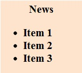
HTML 語法
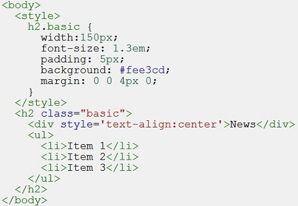
GK 提供三個功能將自訂的 HTML 標籤包成 Web 元件，分別是自訂標籤、事件綁訂、資料處理。接下來介紹如何透過 GK 完成將上面 HTML 語法包成 Web 元件。
一、自訂標籤解譯
GK 的自訂標籤功能，用來封裝 HTML 語法，用自訂標籤來顯示，達到簡化使用的目的。下圖是改成 GK 自訂標籤的 HTML 寫法，是不是簡潔多了?
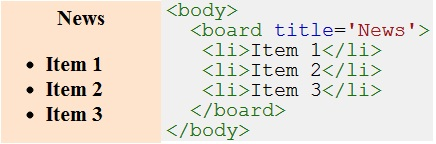
這是怎麼做的?
首先 GK 會經由使用者自訂的標籤庫，找到 board 標籤模板，然後取出＜gk:view＞...＜/gk:view＞區塊中的 HTML，並置換 ${title} , ${content} 字串，然後交由瀏覽器進行顯示。在這例子中，${title} 會置換為 News，${content} 則是自訂標籤 board 的 innerHTML 字串。
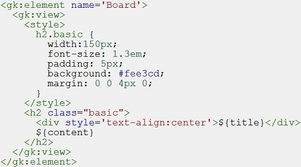
原來 GK 就是模板引擎?
不，GK 的使用訴求是，當開發 Web 應用越來越複雜，將有必要進行封裝成為 Web 元件。封裝實做細節，讓開發應用人員能更專注在應用上。並且元件化後，擴充性及重複使用性都可以提高。 所以 GK 並不是模板引擎，GK 的功能是自訂標籤、事件綁訂、資料處理等三種功能，可將 HTML 標籤升級為 Web 元件。目前上面這個例子，是先展示自訂標籤解譯的功能。
二、事件綁定
GK 的自訂標籤解譯，可以簡化撰寫 HTML 語法。接下來，經由事件綁定機制，自訂標籤就可以處理事件。例如有個功能，點選 Item1~3 項目時，觸發 onclick 事件進行 alert 顯示。要完成此功能，改法是修改 board 標籤模板，在第 14 行加入了 ${id} 和 ${onclick}，${id} 是 html 傳入的 id，用來控制元件，data-gk-click 就是告訴 GK 要將此元素進行 click 事件綁定。
接下來，在＜gk:component＞區段，撰寫 Web 元件被觸發時要做的處理，在這只是先簡單的 alert 出目前點選的文字
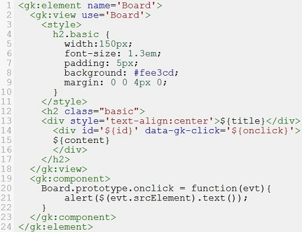
修改完模板存檔後，重新更新 [F5] 頁面，點選 Item 就會進行 alert。
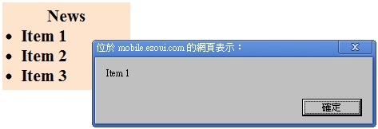
神奇嗎? 這是因為 GK 會幫忙完成自訂事件綁定，並交由 board 標籤模板中的＜gk:component＞＜/gk:component＞區段實現 onclick 邏輯，而在原本 HTML 語法上，完全不需要做任何的修改，還是原本的寫法。
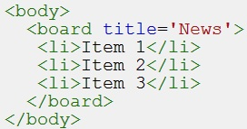
下圖是說明自訂標籤如何透過標籤模板，再轉由 Browser 顯示的流程
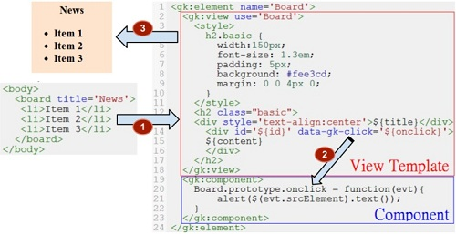
這是怎麼做的?
Board 標籤模板可以看成很像是 Java 語言中的 Class，用來定義產生一個物件的屬性及功能。當撰寫 HTML 語法中包含自訂標籤時，就像是 new 了一個物件。GK 將會經由標籤模板產生一個元件實例，並 binding 到目前 HTML 語法中的自訂標籤元素。因此自訂 HTML 標籤就升級成 Web 元件了。
所以每個自訂標籤，都可以擁有各自的狀態，並且可以撰寫 Model 來處理應用邏輯，所以開發應用的人員，可以使用自訂標籤（也就是 Web 元件）來簡化開發，當隨著自訂標籤模板越來越多，開發就會越來越方便。
而在設計自訂標籤模板部分，考慮的是元件應該提供什麼功能，如何兼顧效能與擴充性，甚至例如現在很夯的 RWD (Responsive Design)。而使用自訂標籤的開發人員，考慮的則是如何滿足使用者的需求。
由於開發 Web 應用越來越複雜，GK 可以幫助元件化，清楚切割 View-Component-Model，如此一來就能簡化開發的複雜度。
三、資料處理
以上已經介紹自訂標籤、事件綁定的功能，最後設定介紹資料處理的功能，當透過 GK 包裝成為 Web 元件後，希望 Web 元件能使用在不同的案例中。達到提高生產力的目的。因此以目前這個範例看來，點選 Item 後要進行的處理，不適合寫在＜gk:component＞區段中，應該改用 gk Model 來處理應用邏輯。在這例子，我們撰寫處理邏輯，希望讓使用者 click Item 時，在 Item 上有顏色效果，如下圖
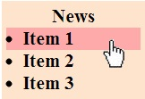
gk Model 的程式寫法很簡單，如下所示。在 HTML Body 裡面，第 16~20 行是進行顯示，而第 22~27 行就是 gk Model 的程式撰寫。Web 元件收到使用者事件後，會呼叫 gkModel 進行處理。我們要處理的是第 16 行這個 board 自訂標籤，id 為 bbs。所以透過 gk.model[‘bbs’] 告訴 GK 要處理 board 自訂標籤的相關動作。
在這例子中，當 Item 被點選時，第 23 行會被呼叫，gkModel 就可以直接針對被點選的 Item 元素進行處理，這裡做了換背景顏色的處理。
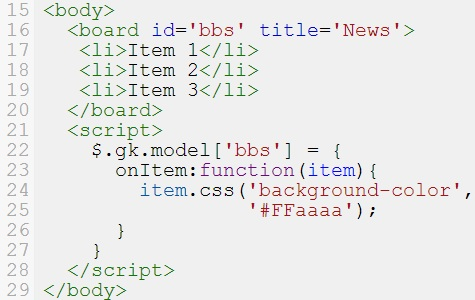
為什麼要這樣做?
View 和 Model 之所以很簡單，是由於 Web Component 封裝了相關的技術細節，要這樣做的原因，是希望藉由切割開發者角色成為兩種角色：開發應用、研發元件。這樣開發應用的開發者，就可以更專注在處理業務邏輯 (View-Model)，而不用學習急處理底層技術細節。而研發元件的人，可以專研技術，打造出更棒、更好用的元件 (WebComponent)，這樣的分工，或許才能應付 Web 應用越來越複雜的局面。
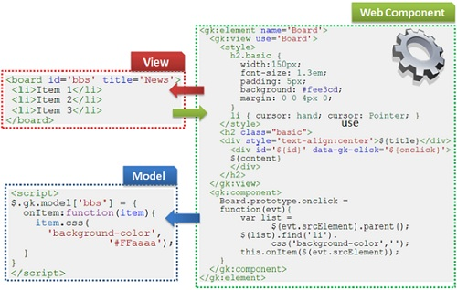
延伸閱讀：
專欄總覽


E-Mail：contact@openfoundry.org Address：台北市南港區研究院路2段128號 中央研究院資訊科學研究所 . 隱私權條款. 使用條款